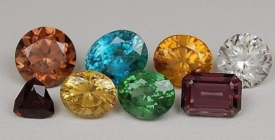

Zircon
Système cristalin : quadratique
Indice de réfraction : 1,920 à 1,990
Birèfringence : uniaxe +0,059
Densité : 4,7
Dureté : 7,5
Couleur : incolore bleu vert jaune rose rouge orange brun
Image :
